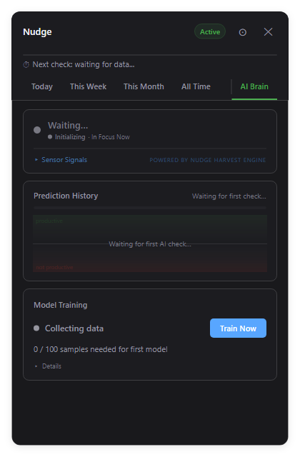
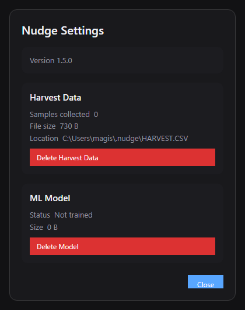

Still focused?
A local AI that learns when to ask. No cloud. No account. No telemetry.


Analytics dashboard with hourly breakdowns and app usage.

AI Brain shows live model status, prediction history, and training progress.

Settings with harvest data, model stats, and controls.
26 feature dimensions
≥98% confidence threshold
100 samples to activate
6 app categories
5 desktop environments
2 operating systems
Try Nudge on your machine
Free and open source. No strings attached.
$ tar -xzf nudge-linux-x64.tar.gz && cd linux
$ ./install-linux-app.sh
$ nudge-tray
harvest daemon started
waiting for 100 training samples █